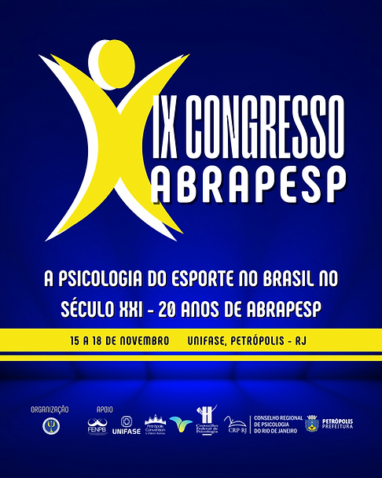
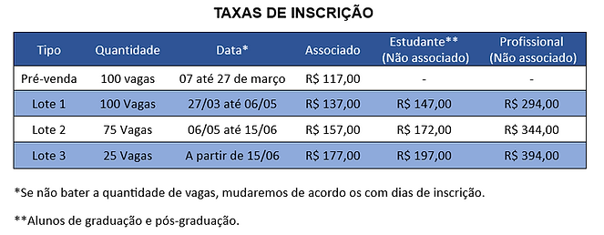

É com muita satisfação que anunciamos o IX Congresso da ABRAPESP tendo como tema central: “A PSICOLOGIA DO ESPORTE NO BRASIL NO SECULO XXI – 20 ANOS DE ABRAPESP” a ser realizado de forma presencial, na UNIFASE, em Petrópolis – RJ entre os dias 15 a 18 de novembro de 2023.
Nesta edição, o congresso se propõe a debater temas emergentes na Psicologia do Esporte e do Exercício Físico e em comemoração aos 20 anos da ABRAPESP. Além disso, o evento tem como foco discutir a prática profissional e a produção de conhecimento na área de ciências do esporte, nas mais diversas áreas de atuação da Psicologia do Esporte contando com a presença de nomes com grande impacto para a construção e avanços da Psicologia do Esporte. E já temos confirmados até o momento: Katia Rubio, Carol Avancini, Marina Gusson, Marina Mattos, Neilton Júnior, Alessandra Dutra e Rodrigo Pieri.
O evento conta com o apoio do Fórum de Entidades Nacionais da Psicologia Brasileira (FENPB), Conselho Federal de Psicologia, Conselho Regional de Psicologia do Rio de Janeiro, do Petrópolis Convention & Visitors Bureau e com a Prefeitura de Petrópolis. O evento será realizado no campus do Centro Universitário Arthur de Sá Earp Net (UNIFASE).


As inscrições serão realizadas exclusivamente online, através do link abaixo: